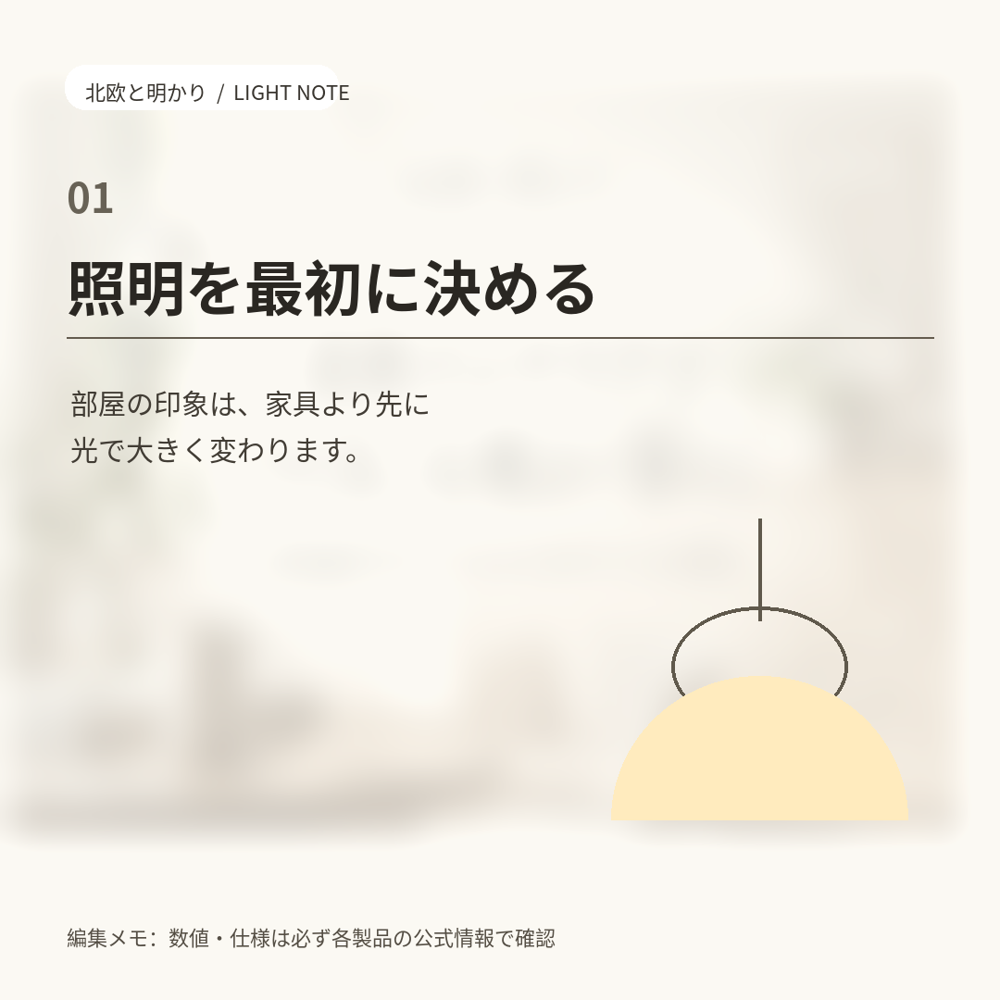

照明
照明を最初に決める。部屋の印象は、家具より先に光で変わる
部屋づくりで最初に決めたいのは照明です。色温度（K）と明るさ（lm）の読み方、取付方式の確認を、20代・30代・40代の編集レンズで整理しました。
記事を読む
HOKUOH TO AKARI — 光と家具から、部屋を考える
家具を増やす前に、光の決め方と、選ばない基準を先にそろえる。北欧スタイルの部屋づくりを、買う前に立ち止まる視点で読む編集メディアです。

照明
部屋づくりで最初に決めたいのは照明です。色温度（K）と明るさ（lm）の読み方、取付方式の確認を、20代・30代・40代の編集レンズで整理しました。
記事を読む
「北欧と明かり」は、ヨリドリ（FUKASELL）が運営する編集ブランドです。感想や体験談ではなく、商品ページや公式情報に書かれていることの読み方を、暮らしの動線から整理します。
記事には20代・30代・40代の編集レンズを使います。これは読者層を想定した編集上の観点で、特定の個人や実体験ではありません。価格・保証・送料などの条件は、必ず各ショップの公式情報で確認する前提で書いています。
この順番で読めるように、記事内には広告リンクを置いていません。リンク先のヨリドリ比較記事には提携リンク（アフィリエイト広告）を含み、その旨を該当ページに表示しています。広告・アフィリエイトポリシー